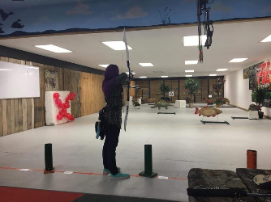

On the weekends, I go to a nearby outdoor range and practice archery. I've been doing archery for about 9 years now and have been shooting with a recurve bow. I can also bake some really good sugarcookies my grandma taught me!
Recently, I coded a Buzzfeed-esque quiz using the properties of HTML, CSS, and most importantly, JavaScript. In this quiz, the user will answer a series of questions based on the type of snacks they prefer at the movie theater. Then, based on their choices, the browser will return a streaming site the user's personality best matches. Although it took me a while to complete, I am really proud of the end result!
I am also one of the leads for the robotics team at my high school. You can learn more about the team on the official Montclair Robotics Team 555 website. Recently, we worked on a project known as REACH (Revolutionized Electronic Arm-Chair for Healthcare). This project focused on building an omni-directional wheelchair to assist a local Wounded Warrior.
During each school year, I am an ambassador for Saturn, an app on both desktop and mobile that helps high schoolers keep track of both their assignments and schedules. Being a part of Saturn has been game-changing for me, and the team over at Saturn are like a second-family!